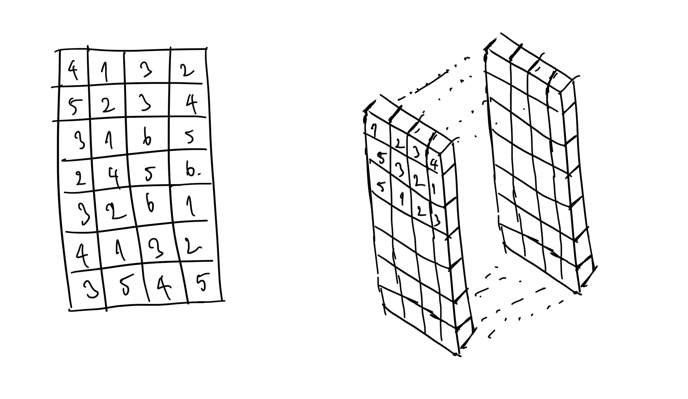
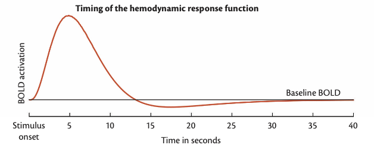

MRG (Manyetik Rezonans Görüntüleme) / fMRG (Fonksiyonel MRG) Nedir?
Manyetik rezonans görüntüleme (MRG), güçlü manyetik alanlar ve radyo dalgaları kullanarak vücudun iç yapılarının ayrıntılı görüntülerini oluşturan tıbbi bir görüntüleme yöntemidir. MRG'nin temel prensibi, vücuttaki hidrojen atomlarının manyetik alan altında hizalanması ve bu hizalanmanın radyo dalgaları ile bozulmasıdır. Radyo dalgalarının kesilmesiyle atomlar eski hallerine dönerken enerji salınımı yaparlar ve bu enerji, bilgisayarlar tarafından görüntüye dönüştürülür. MRG, beyin, omurilik, kaslar, kalp ve diğer organların incelenmesinde kullanılır ve non-invaziv olması, radyasyon içermemesi ve yüksek çözünürlükte görüntüler sunması gibi avantajlara sahiptir.
Bunların en temelinde manyetik rezonans görüntüleme ile elde ettiğimiz veri belli bir çözünürlüğe sahip 3 veya 4 boyutlu bir görüntüdür.
Anatomik yapıları gözlemlediğimiz T1 ve T2 ağırlıklı yüksek çözünürlüklü görüntüler x, y ve z eksenlerine sahip 3 boyutlu görüntülerdir. Fonksiyonel MRG ile elde ettiğimiz görüntüler x,y ve z eksenlerinin yanı sıra zamanda da ilerlediği için temelinde 4 boyutlu bir görüntüdür.
Tanıyıp bildiğimiz 2 boyutlu resimlerin veya fotoğrafların çözünürlükleri px x px olarak ifade edilir. Örn: 1920x1080. Bu sayı şunu ifade eder. Bu çözünürlükteki bir resimde 1920 adet sütun ve 1080 adet satırda 1er tane pixel vardır ve bu pixeller birer sayı değeri içerir. Bu değerler bilgisayarlarımız tarafından evrensel olarak aynı şekilde işlenip ekranda bir renk olarak gösterilir. Ve bütün pixeller birleştiğinde resmi oluşturur.
Pixel vs Voxel
MRG dataları klasik resim ve fotoğraflardaki pixellerin yerleştiği x ve y ekseninin yanında z ekseninde de veri barındırır. Temel olarak 3 boyutlu görüntüleri, z ekseni boyunca birbirinin üzerine eklenmiş 2 boyutlu görüntüler olarak düşünebiliriz.
Ancak görüntü 3 boyutlu olduğu için terminolojik olarak her bir noktadaki/koordinattaki sayısal verinin adı pixel değil voxel olarak ifade edilir. Örneğin 100x100x100 boyutunda 3 boyutlu bir görüntüdeki her bir kutucuk voxel olarak adlandırılır.
- Voxel terimi dersin devamında sıkça kullanılacağı için bu terime erkenden aşina olmanızı tavsiye ederim.

BOLD sinyali ve fMRG
Fonksiyonel MRG difüzyon ve anatomik çekimlerin aksine bölgenin anatomik yapısını değil nöronal aktiviteyi ölçer. Bu yöntem Blood Oxygenation Level Dependant Signal (BOLD sinyali)'nin ölçümü prensibi ile çalışır. Temel olarak şu şekilde açıklayabiliriz;
Aktif olarak çalışan beyin bölgeleri yani o bölgelerdeki nöronlar daha çok oksijen ihtiyacı içindelerdir. Oksijen bağlı ve oksijensiz hemoglobin molekülleri manyetik alana farklı tepki verirler. Bu özellikleri sayesinde de MRG'de BOLD sinyali ile daha yoğun oksijen tüketen bölgelerin görüntülenmesi sağlanır.
